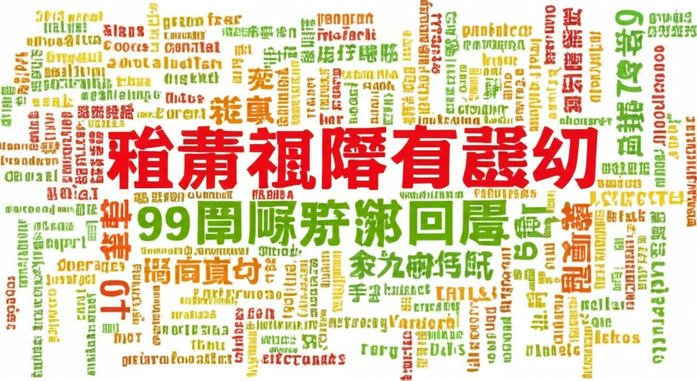

# 體重、健康與新聞：近期資訊彙整
## 引言
近期關於體重、健康和相關新聞的資訊非常豐富，涵蓋了科技新知、減重方法、健康飲食、以及媒體報導等多個方面。本文將彙整這些資訊，提供一個全面的概覽，並從多個角度探討體重與健康之間的關聯，以及相關新聞事件所反映的社會現象。
## 主體內容
### 第一點：科技新報與健康資訊
科技新報（TechNews）持續關注生物科技、醫療等產業，間接提供了健康相關的資訊來源。雖然TechNews本身不專注於體重管理，但其涵蓋的醫療技術和研究進展，對了解肥胖成因和潛在的解決方案提供了科技視角。了解科技在醫療健康領域的應用，能幫助我們更科學地看待體重管理。
### 第二點：中年減重、飲食習慣與疾病預防
多則新聞都指向了中年減重的重要性，以及不健康的飲食習慣可能帶來的風險。例如，有新聞提到中年後肥胖的風險增加，以及減重的新療法。還有新聞報導川普雖然愛吃速食，但透過控制其他生活習慣來維持健康。另一則新聞則提到某些食物可能增加失智風險。這些資訊都強調了維持健康體重和良好飲食習慣，對於預防疾病的重要性，尤其是在中年以後。
### 第三點：媒體報導與社會現象
新聞報導不僅關注健康知識，也反映了社會現象。例如，有新聞報導了大台記者因體重被指責的事件，這反映了社會對體重外貌的關注，甚至可能帶有歧視意味。同時，也有新聞提到了國家中醫藥管理局推動健康體重管理行動，顯示政府層面也在重視國民的健康體重。
## 結論
總體而言，近期關於體重和健康的新聞資訊相當多元，涵蓋了科技、醫學、社會等多個層面。這些資訊共同強調了維持健康體重的重要性，以及良好飲食習慣和生活方式對預防疾病的積極作用。同時，也提醒我們關注社會對體重外貌的態度，避免歧視和刻板印象。